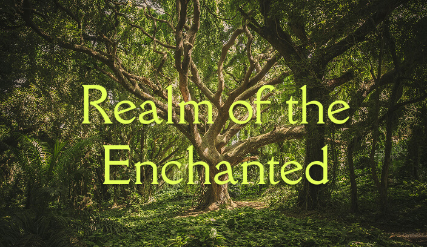
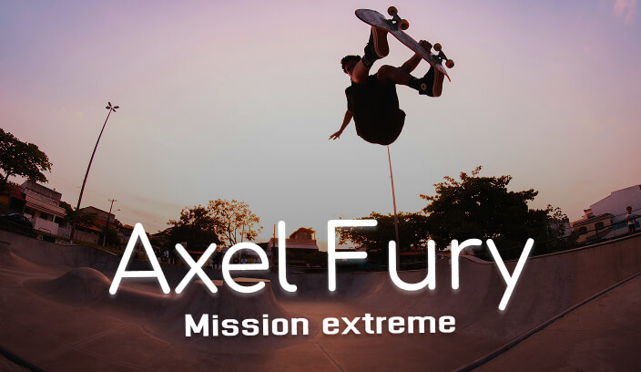
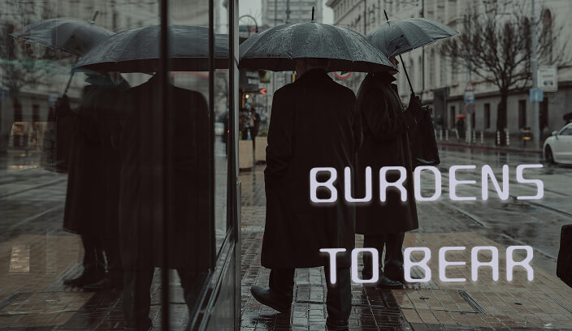
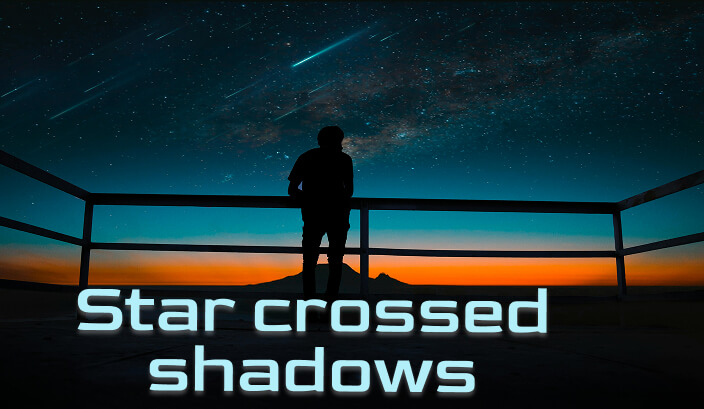

Directed by Colin Levy and produced by Blender Animation Studio. All character rigging and procedural lighting were built using open-source pipelines.
Sintel traverses unforgiving snowy peaks, nursing an injured baby dragon back to health before it is abducted by an adult dragon.


